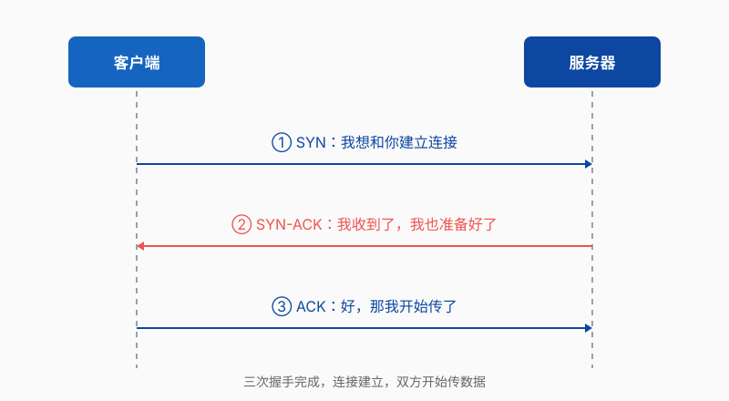
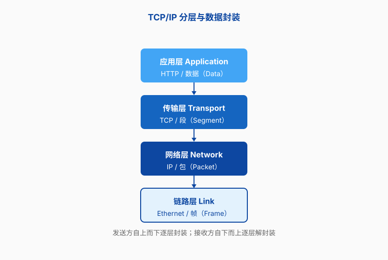
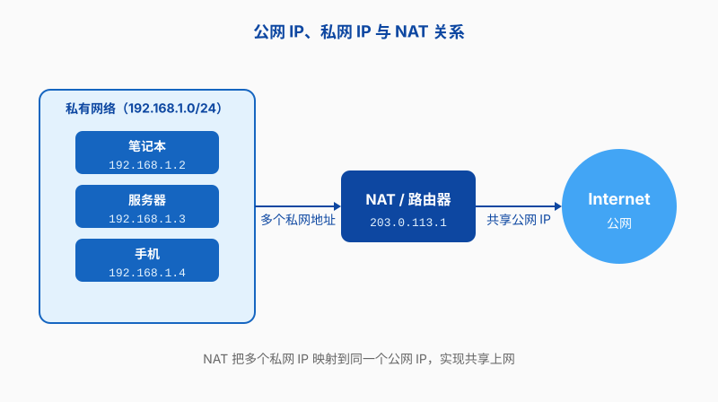
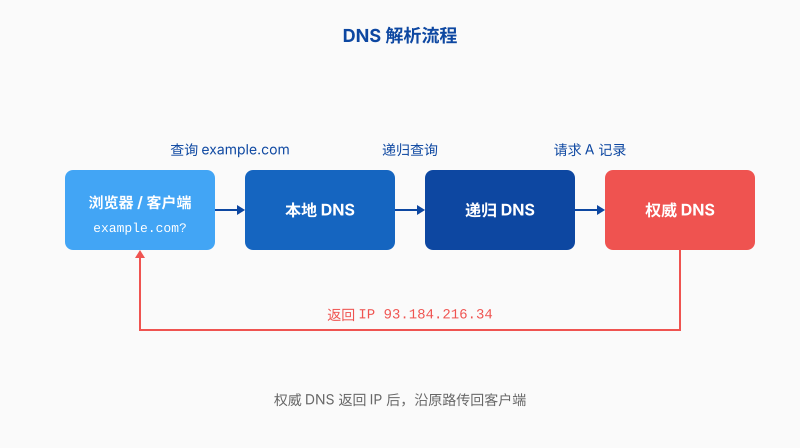

第七章 网络基础
第六章学完 Vim，你在服务器上改配置文件终于不用慌了。但还有一个更基础的问题：那台服务器凭什么能下载数据集、能连上 GitHub、能让你从宿舍 SSH 登录？答案当然是网络。可网络对很多人来说像一层雾——知道它存在，出了问题却只能重启路由器。
这一章我们不讲网络工程师要考的证书，也不讲怎么配置企业级交换机。我们要解决的是 AI 和材料科研里最常见的几类麻烦：数据集下不动、SSH 突然连不上、实验室所有人共用一条出口、域名解析奇怪地失败。把这些搞明白，你在服务器面前就多了一份笃定。
为什么科研要了解网络？
你可能会说，我又不是网管，网络不是信息中心的事吗？这话在桌面办公时代也许成立，但在科研计算里，网络几乎是你每天打交道的基础设施。
训练模型需要数据。CIFAR-10、ImageNet、材料晶体结构数据库、蛋白质序列库，动不动几十 GB。它们通常不在你手边的机器上，而是从公开服务器或课题组存储下载。没有网络，或者网络配置不对，训练第一步就卡死。
算力也常常不在本地。实验室的 GPU 服务器、学校的超算中心、租来的云主机，都要通过网络连接。第二章讲过的 SSH，本质上就是依赖网络才能工作的远程登录工具。
协作和代码管理更离不开网络。Git 仓库、论文在线协作、实验结果同步，全部建立在这些线缆和协议之上。
所以网络不是“选修课”。你可以把它理解为实验室的供水管：平时没人注意，一旦堵了，所有实验都得停。了解一点基本原理，至少能让你在出问题时分得清是“机器坏了”“配置错了”还是“网络不通”。
开机那一刻，网络就已经在了
前面用供水管打比方，说网络是实验室的基础设施。不过这个比方还可以往下再想一层：这根水管不是后来接上去的。服务器从装好系统、插上网线的那一刻起，就已经是网络的一部分——实验室的局域网、校园网、再往外是互联网。它不是在真空里运行，每一次 SSH 登录、每一次数据集下载、每一次对外提供服务，都发生在这张真实的网里。
正因为如此，IP 地址、子网掩码、路由表、DNS、防火墙、监听端口——这些听着像“网管专属”的名词，其实全是 Linux 系统管理的基本内容。它们不是你成为网络工程师才需要懂的东西，而是管理任何一台服务器都绕不开的配置项。本章后面的每一节，都会围绕其中一个展开。
也正因为绕不开，当服务器出问题的时候，网络层面的排查是最容易卡住的一环。SSH 连不上、数据集下不动、端口不通、域名解析失败——这些问题摆在面前，如果对网络完全没有概念，你连“该从哪里查起”都没方向。反过来，一旦心里有了这张地图，排查就有了坐标。
TCP/IP 协议：网络通信的基本规则
要让两台机器说话，得有共同语言。互联网世界最通用的共同语言就是 TCP/IP 协议族。它不是某一个协议，而是一组协议的统称，规定了数据怎么打包、怎么寻址、怎么传输、怎么校验。
分层：像寄快递一样拆任务
网络通信的复杂程度，堪比跨国寄快递：你要写内容、装信封、贴地址、选择运输方式、交给物流公司、空运或陆运。TCP/IP 把这件事拆成几层，每层只关心自己的任务，层与层之间通过明确的接口交接。
不过“拆成几层”这件事，历来有两张地图。一张是 OSI 七层模型：1980 年代由国际标准化组织（ISO）设计，分得很细，理论上也漂亮，但它是先在纸面上定好、再等全世界照做的方案。另一张是 TCP/IP 四层模型：它不是哪个委员会画出来的，而是从实际运行的互联网里长出来的——网络上跑着什么协议，它就按这些协议的分工分层。所以人们常说，OSI 是理论模型，TCP/IP 是事实标准。
本书正文按四层讲，因为它和你每天打交道的真实协议一一对应：HTTP、TCP、IP、以太网，各自落在一层。至于七层比四层多了哪几层、这么漂亮的理论为什么没赢下互联网，故事放在了延伸阅读OSI 七层模型：赢了课本，没赢下互联网里。先看这四层：
- 应用层：直接面向程序，比如 HTTP（浏览网页）、SSH（远程登录）、DNS（域名查询）。
- 传输层：负责端到端的可靠传输，主要是 TCP 和 UDP。TCP 像录取通知书，必须本人签收，保证送到；UDP 像外卖放在门口就走，快但不确认签收。这两个协议具体怎么工作，下一小节专门展开。
- 网络层：负责把数据从源主机送到目标主机，核心是 IP 协议和路由。
- 链路层：负责同一局域网内设备之间的实际传输，比如以太网、Wi-Fi。
这种分层的好处是，上层不用知道下层怎么实现。你写 Python 脚本用 requests 下载数据，不用关心网线是铜缆还是光纤；路由器转发数据包，也不用知道里面装的是网页还是视频。
TCP 与 UDP：录取通知书与外卖
上一节用一句话带过了传输层：TCP 像录取通知书，必须本人签收，保证送到；UDP 像外卖放在门口就走，快但不确认签收。方向没错，但留下两个疑问：录取通知书凭什么“保证送到”？外卖又为什么敢放下就走、不等签收？这两个协议你每天其实都在用：SSH 登录走 TCP，域名查询走 UDP。值得停下来认识一下。
三次握手：先确认对方在听
TCP 是面向连接的协议，传数据之前，通信双方要先互相打个招呼，确认对方在线、也愿意和自己说话。这个过程叫“三次握手”。
为什么非要打招呼？想象你给合作者打电话讨论数据。电话接通后，你不会张口就念数字，而是先确认线路：“喂，听得到吗？”对方说：“听得到，你呢？”你说：“我也听得到。”然后才谈正事。少一句都不行：只有前两句的话，你知道对方能听见你，但对方还不知道你能听见他，万一你的听筒是坏的，他讲了半天全白讲。
TCP 的三次握手就是这三句话，只是换了个名字：
- 第一次，客户端发 SYN：“我想和你建立连接。”SYN 是 synchronize（同步）的缩写，意思是先把状态对齐。
- 第二次，服务器回 SYN-ACK：“我收到了，我也准备好了。”ACK 是 acknowledge（确认）的缩写。
- 第三次，客户端再回 ACK：“好，那我开始传了。”
三次握手完成，连接才算建立，两边才放心传数据。顺便你也理解了，为什么网络不通时 SSH 会卡在那儿转圈：它正卡在握手这一步，SYN 发出去了，SYN-ACK 迟迟没回来。

录取通知书的秘密：序号、确认与重传
连接建好了，录取通知书“保证送到”的底气来自三个机制：序号、确认、超时重传。
TCP 给要发的每个字节编上号，每个数据包带着自己第一个字节的序号，就像每份录取通知书都有一个 EMS 单号。接收方每收到一段，就回一个确认：第 1000 号之前的都收到了。发送方每发一段就掐表计时，超时还没收到确认，就认定这段在路上丢了，原样重发一份。接收方靠序号能认出重复件，直接扔掉；乱序到达的包，也能按序号排回原位。
这套流程和寄录取通知书几乎一一对应：收件人签收后，物流轨迹就更新一条，那就是“收到了”的回执（确认）；你凭 EMS 单号随时查它到哪了（序号）；轨迹好几天不动，学校就会向邮政发起查单，确认丢件就补寄一份（超时重传）。所以 TCP 的“保证送到”不是魔法，是拿开销换的：每个包都要编号，确认要占带宽，丢包还得等超时再重发。
真实的 TCP 还有更精细的设计，比如滑动窗口：一次发好几个包，不用发一个等一个确认；再比如拥塞控制：发现线路堵了就主动减速。这些属于进阶内容，本书不展开。记住“序号、确认、重传”这三件套，日常现象就够解释了。
四次挥手：说完再见再挂电话
数据传完了，连接怎么收场？双方都开着它干耗，浪费资源；一方说断就断，对方手里没发完的数据找谁要去？TCP 的办法是好好告别，过程叫“四次挥手”：主动关闭的一方先发 FIN（finish 的缩写），意思是“我的数据说完了”；对方回一个 ACK：“知道了。”等对方把自己想说的也说完，也发一个 FIN；主动方再回一个 ACK。一共四个包，连接才算体面地画上句号。
为什么握手三次，挥手却要四次？因为 TCP 连接是双向的，你发给我、我发给你是两条独立的道。每条道都要各自宣布“我不再发了”，各自得到确认，一个 FIN 配一个 ACK，两个方向加起来就是四个包。这也意味着，收到对方的 FIN 只表示对方说完了，你这边还有话可以接着说，说完了再发自己的 FIN。就像打电话：对方说“我讲完了”，你还能再交代两句，双方都交代完，才一起挂电话。偶尔你也会看到“三次挥手”：对方恰好也没话说了，把 ACK 和 FIN 合成一个包发出去，道理不变。
最后留两个和排查有关的印象。主动关闭的一方发完最后一个 ACK，不会马上把连接忘干净，还要等一小会儿才彻底收场，这段时间连接停在 TIME_WAIT 状态；写脚本频繁连数据库时，常能看到一堆 TIME_WAIT 残留连接，那是正常告别的尾巴，一般不用处理。另一种情况是没来得及告别：如果对面进程崩溃，或者服务压根没在监听，TCP 通常会直接回一个 RST（reset，重置），客户端看到的就是 Connection reset 之类的报错。四次挥手是“说完再见再挂电话”，RST 则是对面直接把电话撂了。下次遇到 Connection reset，先别怀疑网速，多半是服务本身出了问题。
UDP：不求送到，但求快
UDP 把上面这套全扔了：想发就发，既不握手也不编号，对方收没收到它不管，包丢了也不重发。听起来不负责任，换来的是实打实的轻：头部只有 8 字节（TCP 至少 20 字节），没有握手延迟，也没有等待确认和重传的开销，所以通常比 TCP 快。
关键是，很多场景里“丢了就丢了”恰恰是对的。看直播时丢一个包，画面花一下就过去了；要是为补这一帧让后面所有画面排队等重传，直播就变成了幻灯片。实验室的传感器每 100 毫秒上报一次温度，丢了一条，下一条马上来，重发一条 0.1 秒前的旧数据反而没有意义。DNS 查询更直接：一问一答各一个小包，没收到答复就再问一遍，为这点事先握手三次实在不划算。
把两者并排看，怎么选就清楚了：
| 对比项 | TCP | UDP |
|---|---|---|
| 连接 | 先三次握手建立连接 | 无连接，直接发 |
| 送达 | 丢包会重传，通常能送到 | 不保证，丢了就丢了 |
| 顺序 | 按序交付给应用 | 不保证顺序 |
| 开销 | 握手、确认、重传，头部较大 | 机制少，头部小 |
| 典型应用 | HTTP/HTTPS、SSH、数据库连接 | DNS 查询、视频直播、实时传感器数据 |
规律就一条：数据不能丢的用 TCP，晚到不如不到的用 UDP。下载数据集、传代码、连数据库，少一个字节文件就毁了，必须 TCP；直播、实时监控丢一帧无所谓，UDP 更合适。表格里把 HTTP 画在 TCP 一边，说的是目前主流的 HTTP/1.1 和 HTTP/2；较新的 HTTP/3 改用基于 UDP 的 QUIC 协议，把建立连接从 TCP+TLS 的多次往返压缩成一次往返。这个例外恰好说明，TCP 和 UDP 的分工是工程取舍的结果，边界一直在动。
最后回到本章开头的问题：数据集下载为什么忽快忽慢，SSH 为什么突然卡一下又恢复？多半就是丢包加重传在起作用。链路质量差时，TCP 的包在路上丢了，发送方等超时、重发，吞吐自然往下掉；丢包率高时 TCP 还会主动减速，免得把本已拥堵的线路挤得更惨。你在终端里看到的“卡”，其实是协议在默默收拾残局。同样的烂网络下，用 UDP 的视频会议是另一副症状：不怎么卡，但花屏、有杂音，因为丢掉的包没人补。症状完全不同：TCP 应用变慢，UDP 应用变花。以后排查网络问题，先问一句：这个应用走的是 TCP 还是 UDP？
数据封装：每一层加一截“信封”
说完传输层的两个主角，再来看数据整体是怎么一层层出门的：数据从应用层往下走时，每一层都会给它加一个头部，就像把信纸装进信封，再装进快递袋。接收方则从下层往上拆，逐层去掉头部，最后把原始数据交给应用。
比如你要下载一个数据集文件，应用层发出 HTTP 请求；传输层加上 TCP 头部，写上源端口和目标端口；网络层加上 IP 头部，写上源 IP 和目标 IP；链路层加上 MAC 头部，准备交给交换机或路由器。
这个过程叫封装。它让每一层都能独立工作，也出了问题容易定位：如果是 IP 地址写错了，数据到不了对方；如果是端口写错了，数据到了对方但没人接收。

一个科研场景：下载数据集时发生了什么
假设你在实验室工作站上下载一个材料晶体结构数据集，URL 是 https://datasets.materials-lab.example/cifs.tar.gz。从按下回车到文件开始传输，底层大致做了这些事：
- 浏览器或
wget、curl把 URL 交给应用层，构造 HTTP 请求； - 传输层用 TCP 与远程服务器的 443 端口建立连接；
- 网络层通过 DNS 把域名翻译成 IP 地址，比如
198.51.100.7； - 数据包经过本地路由器、校园网、运营商，最终到达目标服务器；
- 目标服务器逐层拆封，把 HTTP 请求交给 Web 服务，开始返回文件。
这个过程中任何一个环节出错，你都会看到不同的症状。DNS 失败会报“域名解析错误”；路由不通会“连接超时”；防火墙拦截会“拒绝连接”。后面几节就是教你识别这些症状。
IP 地址、子网掩码与 NAT
IP 地址是网络世界里最直接的门牌号。但和现实世界不同，一台机器可能同时拥有“对内”和“对外”两个地址，而且很多机器共享同一个对外地址。要理解这些，得从 IP 地址和 NAT 说起。
IP 地址：网络世界的门牌号
每台联网设备都需要一个 IP 地址，才能在网络中被找到。IPv4 地址写成四段十进制数字，比如 192.168.42.10，每段 0–255，总共 32 位。32 位最多大约 42 亿个地址，听起来很多，但全球的手机、电脑、服务器、IoT 设备都在抢，早就不够用。
IPv4 与 IPv6
IPv6 是为了解决地址耗尽而设计的，地址长度变成 128 位，写法像 2001:0db8:85a3::8a2e:0370:7334。科研网络通常同时支持 IPv4 和 IPv6，但很多家用路由器和旧设备仍只跑 IPv4。本章主要以 IPv4 为例，概念在 IPv6 里大同小异。
公网地址与私网地址
不是所有 IP 地址都能在互联网上直接路由。RFC 1918 规定了三段私有地址范围，只能用在局域网内部：
10.0.0.0/8172.16.0.0/12192.168.0.0/16
你家里的路由器、实验室的交换机，通常都会给连接的设备分配 192.168.x.x 这样的私网地址。这些地址在局域网内唯一，但全球互联网上可能有无数台机器都叫 192.168.1.100。
真正能在公网上被路由的地址叫公网地址，由运营商或学校网络中心分配。比如 203.0.113.45 就是一个公网地址示例（它来自 RFC 5737 规定的测试网段，现实公网中不会出现）。
子网掩码：划分大院里的小院子
子网掩码用来区分 IP 地址的哪一部分代表“哪个院子”，哪一部分代表“院子里的哪一户”。写成 255.255.255.0，或者用 CIDR 表示 /24。
比如地址 192.168.42.10/24，前 24 位是网络号，相当于“大院”；后 8 位是主机号，相当于“户号”。同一子网内的设备可以直接通信；跨子网则需要经过网关转发。
科研实验室常见的配置是 /24 子网，能容纳 254 台主机，足够一个课题组使用。如果机器特别多，也可能用 /23 或更大的网段。
终端里查看本机 IP 和子网掩码，可以用 ip addr：
student@lab-workstation:~$ ip addr show eth0
2: eth0: <BROADCAST,MULTICAST,UP,LOWER_UP> mtu 1500 qdisc fq_codel state UP group default qlen 1000
link/ether 52:54:00:ab:cd:ef brd ff:ff:ff:ff:ff:ff
inet 192.168.42.10/24 brd 192.168.42.255 scope global dynamic noprefixroute eth0
valid_lft 86399sec preferred_lft 86399sec
这里 192.168.42.10/24 就是本机地址和子网掩码的简写。
NAT：让私网也能出门
如果实验室每台机器都用私网地址，怎么访问互联网？答案是 NAT（Network Address Translation，网络地址转换）。路由器或防火墙会把私网机器的源地址改成自己的公网地址，再发出去；收到回复后，再根据记录把数据包转回给正确的私网机器。
这就像一个大院只有一个对外门牌号，收发室根据内部登记表把邮件分发给各家。NAT 极大缓解了 IPv4 地址不足的问题，也让内部网络多了一层隔离。

实验场景：实验室共享公网 IP
很多 AI 和材料实验室的网络拓扑是这样：导师办公室有一台路由器，从学校网络中心申请到一个公网 IP，比如 203.0.113.45。实验室里的 GPU 服务器、工作站、打印机等设备都挂在 192.168.42.0/24 这个私网里。
当你在工作站 192.168.42.10 上访问 Hugging Face 或下载数据集时，数据包先走到路由器，路由器把源地址改成 203.0.113.45，再发送到互联网。对远程服务器来说，它只看到来自 203.0.113.45 的请求。
这也意味着，如果你想从宿舍直接 SSH 连到实验室某台机器，通常不能只写它的私网地址 192.168.42.20，因为宿舍网络看不到那个私网。你需要先登录到一台有公网 IP 的“跳板机”，或者配置端口转发、VPN。第二章讲过 SSH 密钥登录，现在你知道为什么它通常要配合跳板机或 VPN 使用了。
路由表：数据包怎么知道往哪走
IP 地址告诉数据包“要去哪”，路由表告诉它“怎么走”。每台联网的 Linux 主机都维护一张路由表，记录着不同目的地址应该从哪个接口、哪个网关发送。
路由表就是路口指示牌
路由表可以看作一系列规则。每条规则大致说：“如果目的地是 A，走这边；如果目的地是 B，走那边；其他情况，走默认方向。”
用 ip route 查看本机路由表：
student@lab-workstation:~$ ip route
default via 192.168.42.1 dev eth0 proto dhcp metric 100
192.168.42.0/24 dev eth0 proto kernel scope link src 192.168.42.10 metric 100
第一行是默认路由：所有不知道往哪走的数据包，都交给 192.168.42.1，从 eth0 出去。第二行是直连路由：目的地在 192.168.42.0/24 这个子网内的，直接通过 eth0 发送，不需要网关。
默认网关：出门的默认方向
默认网关通常是本地子网的第一个地址，比如 192.168.42.1。它一般是路由器或三层交换机的内网接口。数据包如果目的地不在本地子网，就会交给它，由它决定下一步。
在配置静态 IP 时，网关填错是最常见的错误之一。比如把网关写成 192.168.42.254，而那台设备实际上在 192.168.42.1，结果就是本机能和局域网通信，但上不了互联网。
排查：连不上网时先看哪
遇到“上不了网”，不要急着重启。可以按这个顺序排查：
- 看链路：网线插了吗？Wi-Fi 连上了吗？
ip link显示接口状态是 UP 还是 DOWN。 - 看地址：
ip addr有没有拿到正确的 IP 和子网掩码。 - ping 网关：
ping 192.168.42.1，确认本地网络通。 - ping 公网 IP：比如
ping 198.51.100.7，确认路由和 NAT 正常。 - ping 域名：比如
ping datasets.materials-lab.example，确认 DNS 正常。
如果第四步能通但第五步不通，问题通常在 DNS；如果第三步就不通，问题在本地网络或网关；如果第三步通但第四步不通，可能是路由器、NAT 或上层网络故障。
DNS：域名解析
记住一串 IP 地址对人不友好，DNS（Domain Name System）就是互联网的“电话簿”，负责把人类可读的域名翻译成机器需要的 IP 地址。
为什么需要 DNS
试想如果没有 DNS，你想下载数据集得先记住 198.51.100.7 这串数字；服务器迁移换了地址，所有脚本都要改。域名让这些问题简单化：datasets.materials-lab.example 比 IP 好记，而且管理员可以在后台把域名指向新的服务器，用户无需感知。
DNS 查询是怎么完成的
当你在浏览器里输入一个域名，操作系统或浏览器里的 stub resolver 会先发起查询，我们通常把它叫做“本地解析器”；它并不亲自去问根服务器，而是把问题转发给配置好的递归 DNS 服务器，通常由 ISP 或公共 DNS（如 8.8.8.8）提供。
如果递归服务器没缓存这个域名，它会一层层向上查询：先问根域名服务器，根服务器告诉它去找负责 .example 的顶级域服务器；顶级域服务器再告诉它去找 materials-lab.example 的权威服务器；权威服务器最终返回对应的 IP 地址。
这个过程对你是透明的，通常只需几十到几百毫秒。解析结果会被缓存，一段时间内重复访问同一个域名就不需要再问一遍。

本地缓存与 /etc/hosts
在访问 DNS 服务器之前，操作系统还会先查两个地方：本地缓存和 /etc/hosts 文件。
/etc/hosts 是一个静态映射表，格式很简单：
# /etc/hosts
127.0.0.1 localhost
192.168.42.20 gpu-server
198.51.100.7 datasets.materials-lab.example
如果你经常 SSH 登录实验室的 GPU 服务器，可以在 /etc/hosts 里给它起个别名 gpu-server，以后就可以 ssh gpu-server，不用记 IP。改这个文件需要 root 权限，用第六章学过的 Vim 就可以：
student@lab-workstation:~$ sudo vim /etc/hosts
不过要注意，/etc/hosts 里的条目优先级通常高于 DNS。如果这里的映射写错了，比如把数据集域名指向了一个不存在的 IP，你就会遇到下一节说的那种奇怪错误。
科研场景：数据集域名解析失败
有一天你发现 wget https://datasets.materials-lab.example/cifs.tar.gz 一直报“Name or service not known”。但同实验室其他人都能下载。怎么回事？
先用 host 或 dig 检查 DNS 解析：
student@lab-workstation:~$ host datasets.materials-lab.example
datasets.materials-lab.example has address 198.51.100.7
如果 host 能返回正确 IP，但 wget 不行，问题可能出在程序自己的代理设置或 SSL 证书。如果 host 也失败，再看本机用的 DNS 服务器：
student@lab-workstation:~$ cat /etc/resolv.conf
nameserver 192.168.42.1
nameserver 8.8.8.8
有时实验室为了安全，只允许使用内部 DNS。如果你手动把 8.8.8.8 写在前面，某些内部域名反而解析不了。把顺序改回来，或者只保留内部 DNS，问题可能就解决了。
还有一种可能是 /etc/hosts 里有旧映射。比如之前做测试时把数据集域名指向了 10.0.0.5，后来服务器迁移到了 198.51.100.7，但 hosts 文件没更新。用 Vim 删掉那条旧记录，刷新缓存，再试一次。
端口、服务与防火墙
数据包到了目标机器门口，还得知道敲哪扇窗。IP 地址找到机器，端口号找到机器上的具体服务。
端口：一台机器上的多个窗口
一台服务器可能同时运行 Web 服务、SSH 服务、数据库。网络层把数据送到这台机器的 IP 后，传输层根据端口号决定交给哪个程序。
端口号是一个 0–65535 的整数。0–1023 是知名端口，通常需要管理员权限才能绑定；1024–49151 是注册端口；49152–65535 是动态端口，客户端临时使用。
常见服务与端口
科研环境里经常遇到这些端口：
| 端口 | 服务/协议 | 科研场景 |
|---|---|---|
| 22 | SSH / SCP / SFTP | 远程登录服务器、传代码和模型 |
| 53 | DNS | 域名解析 |
| 80 | HTTP | 普通网页、内部文档站 |
| 443 | HTTPS | 下载数据集、访问 Web 服务 |
| 3306 | MySQL / MariaDB | 材料实验数据库存储 |
| 5432 | PostgreSQL | 科研项目管理数据库 |
| 6379 | Redis | 训练任务队列缓存 |
| 8080 | JupyterLab / TensorBoard | 交互式实验和可视化 |
| 27017 | MongoDB | 非结构化实验记录 |
防火墙不是只有坏人需要
防火墙根据规则决定哪些流量可以进出。Linux 上常见的防火墙工具有 iptables、nftables、firewalld、ufw。学校或云服务商还可能有一层网络 ACL。
防火墙不是只防黑客。它也经常因为配置太严格，把你自己的合法流量挡住。比如你启动了一个 JupyterLab 在 8888 端口，但防火墙没开放 8888，同组同学就访问不了。
查看 Linux 上监听端口的命令是 ss -tlnp：
student@gpu-server:~$ ss -tlnp
State Recv-Q Send-Q Local Address:Port Peer Address:Port Process
LISTEN 0 128 0.0.0.0:22 0.0.0.0:* users:(("sshd",pid=1234,fd=3))
LISTEN 0 128 127.0.0.1:8080 0.0.0.0:* users:(("python",pid=5678,fd=5))
这里 0.0.0.0:22 表示 SSH 服务在所有接口上监听 22 端口；127.0.0.1:8080 表示某个 Python 程序只在本地回环地址监听，外部机器连不上。
SSH 连不上？端口、防火墙、SELinux 一起查
第二章讲过 SSH 远程登录。现在你知道，SSH 能不能连上，不只是密钥对不对的问题，还要过网络这一关。
假设你在宿舍用 ssh student@203.0.113.45 登录实验室跳板机，结果提示“Connection refused”。可能的原因：
- SSH 服务没运行。在服务器上检查：
systemctl status sshd。 - SSH 监听在非标准端口，但你还用默认 22。查看
/etc/ssh/sshd_config里的Port配置。 - 防火墙拦截了 22 端口。检查
sudo firewall-cmd --list-ports或sudo ufw status。 - SELinux 或 AppArmor 限制。RHEL/CentOS 系尤其常见，必要时检查审计日志。
- 路由器没做端口转发。如果目标机器在私网里，公网 IP 只是路由器，需要把 22 端口映射到私网机器。
排查时可以先在服务器本地测试：ssh localhost。如果连自己都连不上，问题在 SSH 服务本身；如果连得上但外部连不上，问题在网络层或防火墙。
修改 /etc/ssh/sshd_config 时，照例用 Vim（第六章），改完记得重启服务：
student@gpu-server:~$ sudo vim /etc/ssh/sshd_config
student@gpu-server:~$ sudo systemctl restart sshd
这里提醒一句：改 SSH 端口或防火墙前，最好先保留一个已经登录的会话，免得把自己锁在门外。
网络这一层没有魔法，它由地址、路由、端口、协议和防火墙规则共同构成。理解了这些，下一次数据集下载失败、SSH 登录超时或者域名解析异常，你就能有条不紊地排查。下一章我们会继续沿着“机器与外界通信”这条线，看看 Web 和 API 是怎么在互联网上交换数据的。